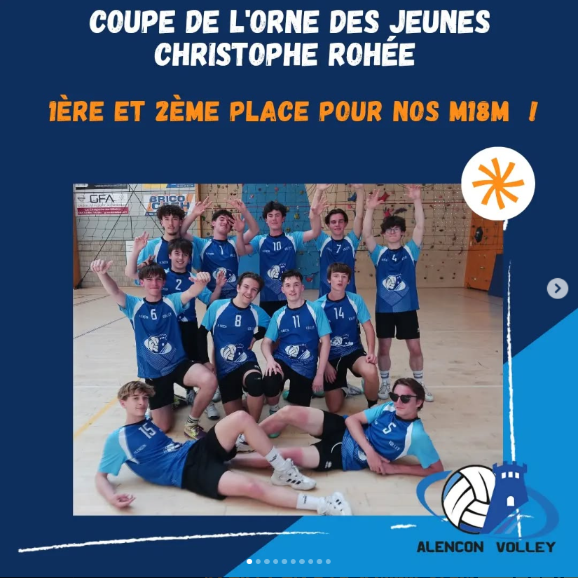
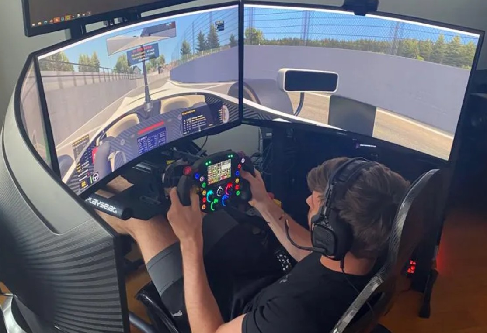
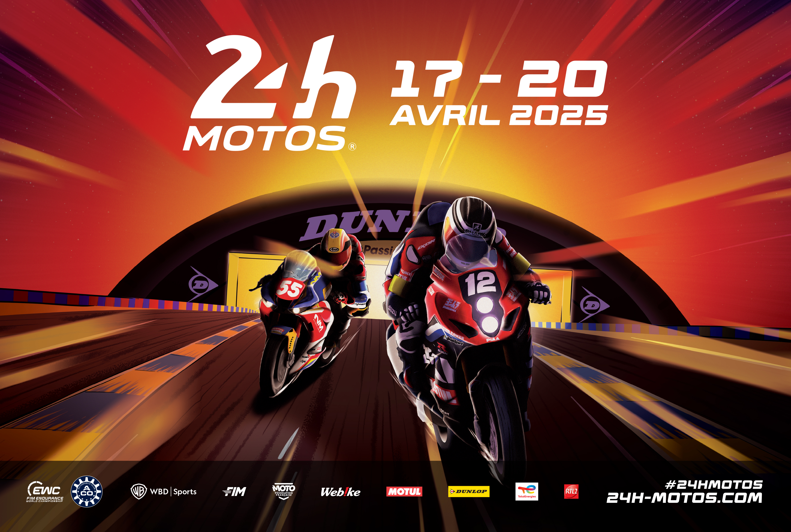
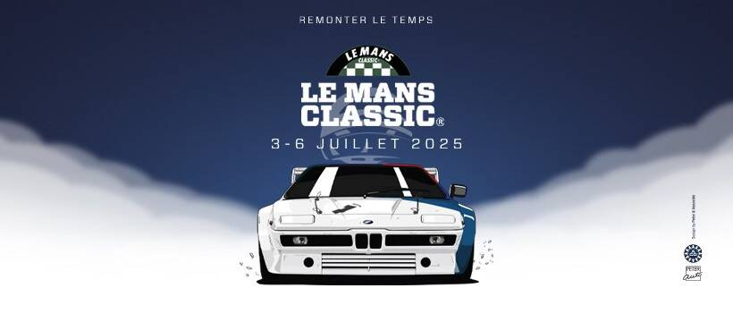

À propos de moi
Bienvenue ! Je m'appelle Gwendal Duvernet--Le Bras, étudiant en BUT Informatique à Lannion. Passionné, rigoureux et toujours curieux d’apprendre, voici un aperçu de qui je suis.
💻 Compétences
SQL
Java
Langage C
GitHub
Autonome
Esprit d'équipe
🎓 Parcours
2024
Baccalauréat général mention bien — Spécialités Mathématiques et NSI
2024 - Aujourd'hui
Étudiant en BUT Informatique à l'IUT de Lannion (1re année)
⚙️ Passions

Volley-ball
Sport collectif que je pratique régulièrement, il me permet de me défouler et de renforcer l'esprit d'équipe.

Sim Racing
Simulation de course sur volant. Concentration, réactivité, et réglage sont les clés.

24h Motos du Mans
Participation en 2025 ! Une expérience incroyable au cœur du circuit et de l'organisation d'un grand événement.

Le Mans Classic
Passionné d’automobile ancienne, je prévois d’y participer prochainement.